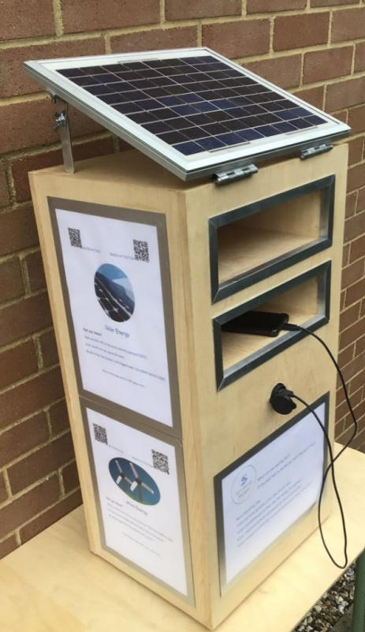
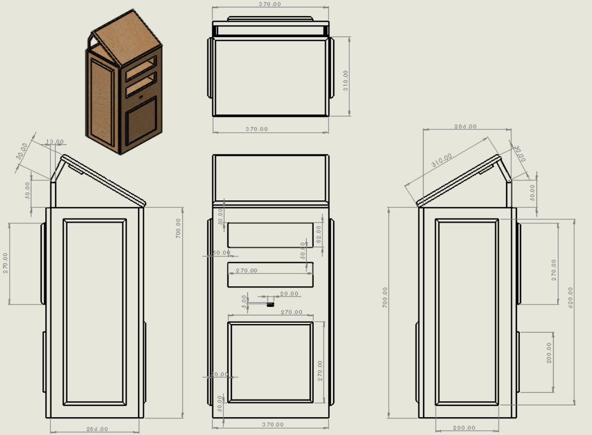
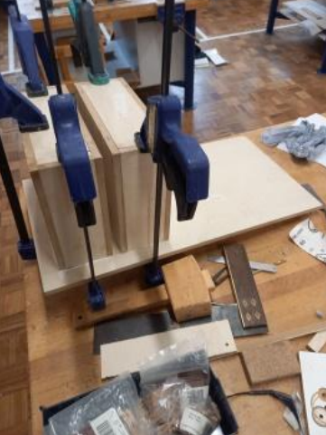
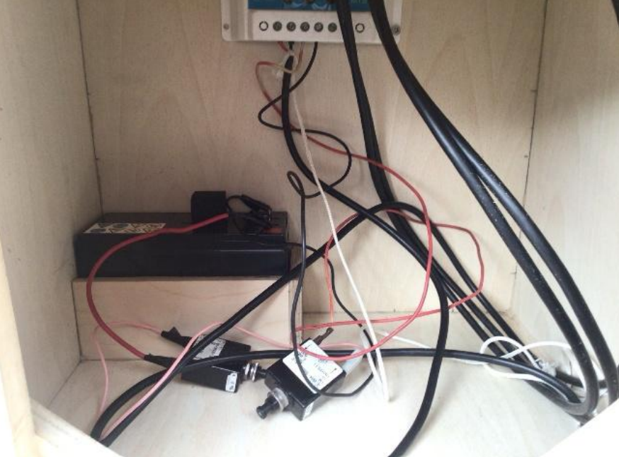
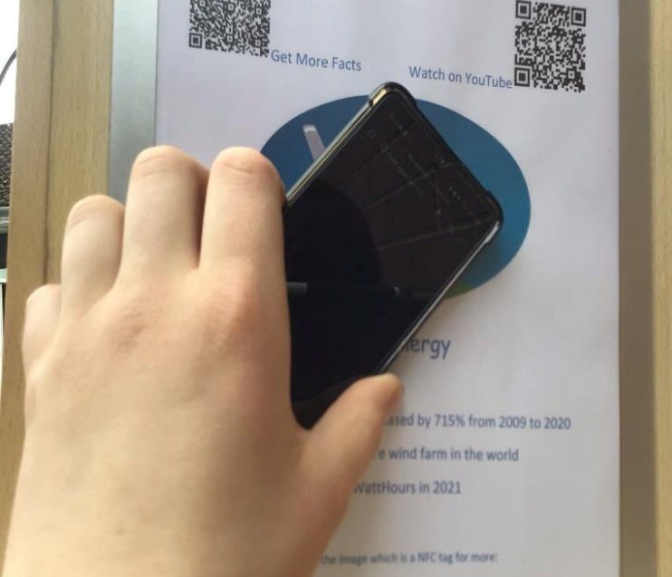
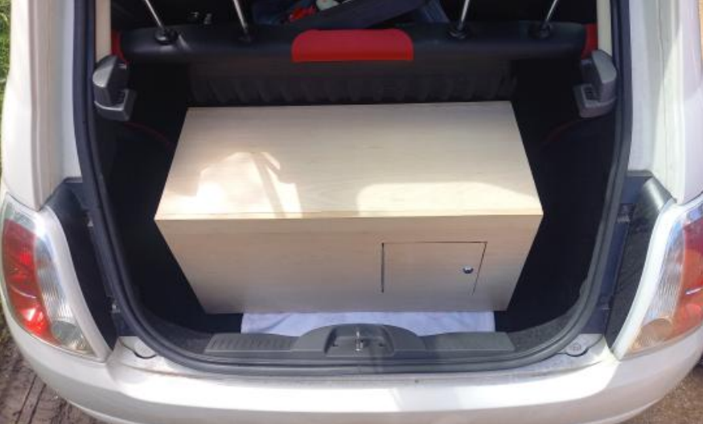

For my GCSE Design and Technology coursework, I selected 'Theme 2: Alternative Energy'. I noticed that while electric vehicles are heavily promoted, many people are unaware that the electricity used to charge them often comes from fossil fuels. Therefore, I decided to design a product aimed at actively promoting awareness of renewable energy sources. My full writeup can be seen here.
My final design is a portable 'Shelving Charger' — an interactive, solar-powered display unit intended for businesses and local councils to use at public events, trade shows, or supermarkets.The core concept is simple but highly effective: it attracts passers-by by offering them free, sustainably generated electricity to charge their mobile phones. While their devices are charging, users are exposed to educational posters and interactive technology that teaches them about renewable energy.

To ensure my product would actually work in the real world, I started by conducting user research. I interviewed a homeowner who had recently installed solar panels to understand what motivates people to adopt green energy. He emphasised that physical products, like solar panels themselves, are powerful promotional tools, and that 'free giveaways' are a great way to grab attention. He also noted that any promotional stand should ideally be made from sustainable or reclaimed wood to match the environmental message.
I also conducted a survey with 20 adults aged 34 to 60. The results clearly shaped my design:
Using this data, I developed four initial concepts: a charging box, a shelving unit, a table, and a bench. I evaluated these against my specification and user feedback. I selected the 'Shelving Charger' because it offered the best balance of visibility for the posters, protection for the charging phones, and portability for the person running the event stand.
Before touching any wood, I built a quick cardboard prototype. This physical modeling was crucial because it helped me realise that my initial design didn't have a way to access the internal wiring or battery. To fix this, I added a rear access door to the design. Next, I moved to the computer and used SolidWorks (a professional 3D CAD software) to fully model the product, allowing me to generate accurate cutting lists and test the assembly virtually before manufacturing.

I constructed the main body using Beech veneered MDF. I chose this material because MDF is made from recycled wood fibers, which fits my project's sustainability goals, while the Beech veneer provides a high-quality, natural wood appearance.
The manufacturing process required a variety of workshop skills and tools:

The product isn't just a wooden box; it is a fully functioning electrical system. I successfully wired a 10W solar panel to a charge controller, which regulates the voltage going into a 12V lead-acid battery hidden in the base. This battery then connects to a dual USB port on the front of the unit, allowing users to plug in standard charging cables. The battery acts as a reserve, meaning the unit can still charge phones even if the weather turns cloudy or if it is used indoors.

To make the educational aspect modern and engaging, I embedded NFC (Near Field Communication) tags and QR codes into the poster boards. Rather than taking a paper leaflet, users can simply tap their smartphone against the poster to instantly open YouTube videos explaining geothermal energy, or view a live dashboard showing real-time data of what energy sources the UK grid is currently using.

To prove the concept worked, I conducted several physical tests:

Overall, the project was highly successful in meeting the design brief. It functions perfectly as an interactive, educational charging station. If I were to develop a 'Version 2.0,' I would add wheels and a telescopic handle to make it even easier for event staff to move around, and I would redesign the rear door hinge so it stays open more easily during maintenance.